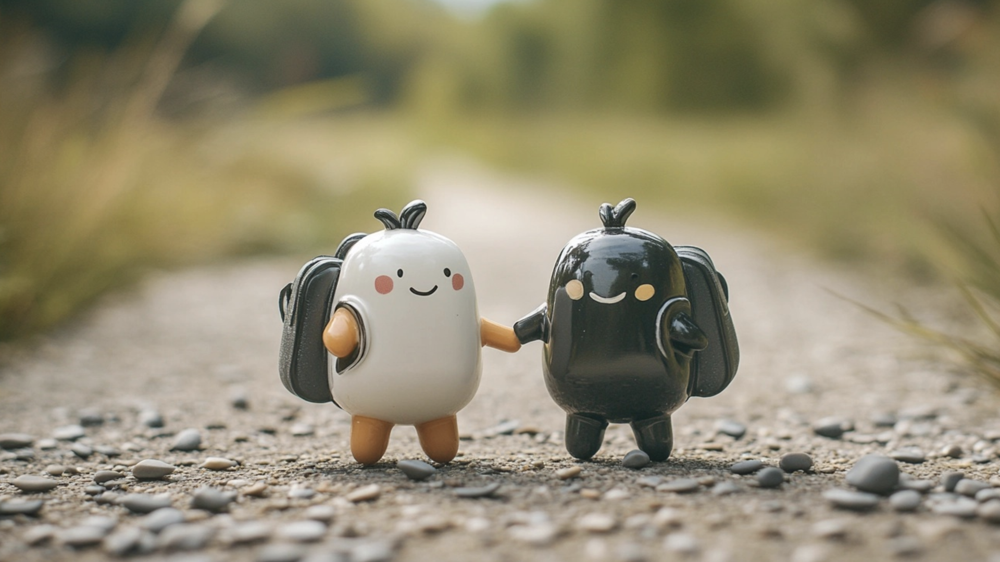
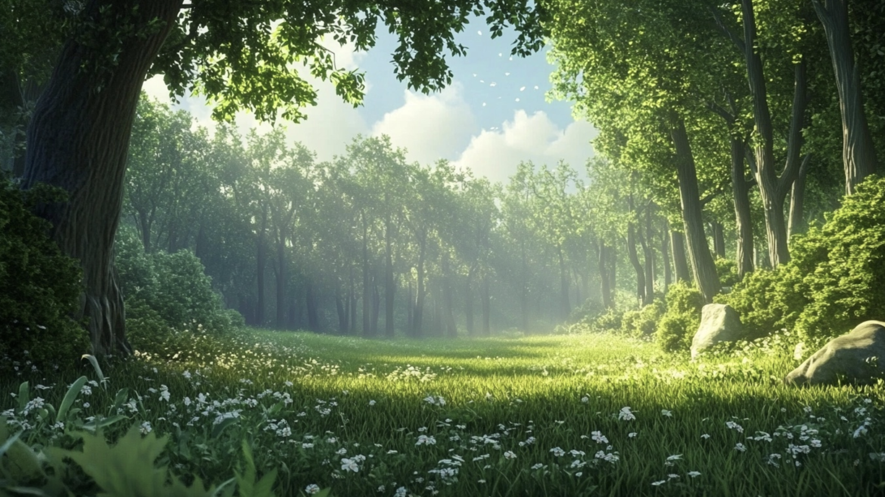
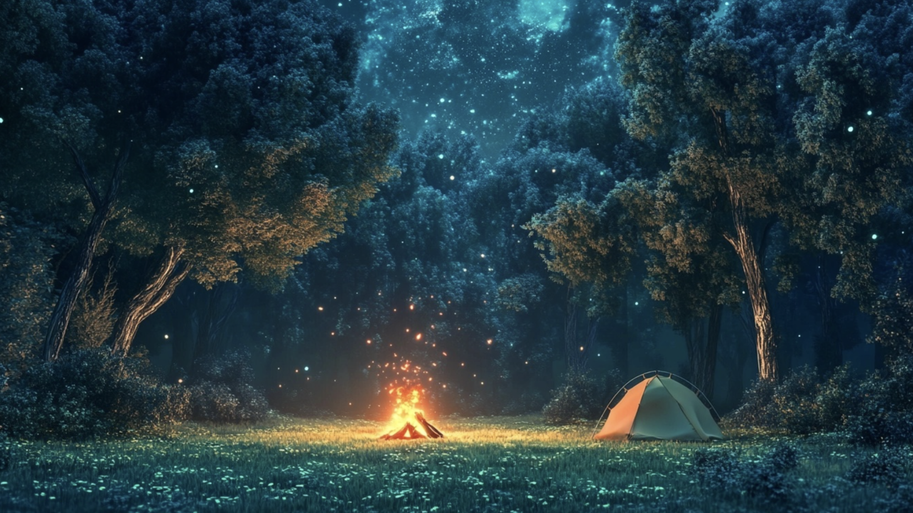
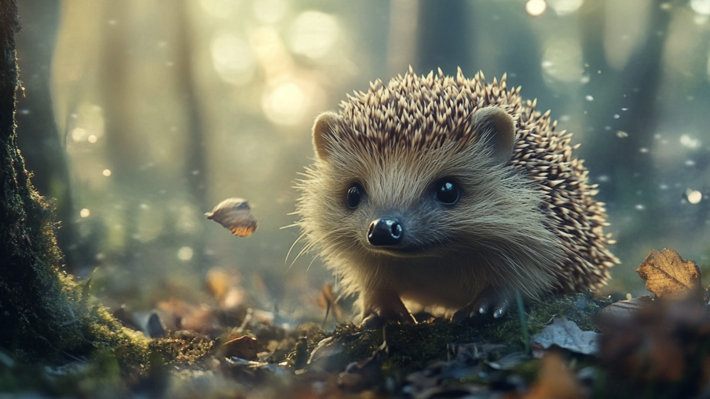

Byl krásný letní den, kdy pepřenka a solnička seděly na poličce v kuchyni, koukaly ven z okna a snily o dobrodružstvích. Slunce zářilo, ptáci zpívali a pepřenka, plná temperamentu, se otočila ke solničce a řekla: „Víš co? Co kdybychom šli na čundr? Vyrazíme ven, postavíme stan, uděláme oheň, budeme si užívat přírody a krásného ticha lesa.“
Solnička, která byla vždy trochu klidnější a opatrnější, se trochu zamyslela. „Čundr? Myslíš to vážně? My jsme přece kuchyňské náčiní!“
Ale pepřenka se jen zasmála. „No a co? Dobrodružství čeká! Pojďme! Vezmeme nějaké jídlo, deku a stan a vydáme se ven!“
Po chvíli přemlouvání nakonec i solnička souhlasila. Společně se vydaly z kuchyně, sjely po stole dolů a zamířily k lesu, který se rozprostíral za domem. Jak tak šly, slunce je příjemně hřálo na kovových stranách, a lesní cesta byla plná zvuků přírody. Cvrčci cvrlikali, listí šumělo ve větru a stromy kolem nich vrhaly stíny na stezku.
Po několika hodinách chůze dorazily na krásnou mýtinu, která byla obklopena vysokými borovicemi. Na jedné straně zurčel malý potůček a z druhé strany foukal jemný vánek, který s sebou nesl vůni jehličí. Bylo to ideální místo pro táboření.

„Tak tady to bude!“ zvolala pepřenka nadšeně a začala z batohu vytahovat stan. Solnička, která se už unavila, si zatím sedla na kraj mýtiny a sledovala, jak pepřenka energicky začíná stavět stan. Rozložily plachtu na zem, zasunuly tyčky do správných otvorů a za chvíli stál jejich malý, útulný stan.
Když byl stan hotový, pustily se do přípravy ohně. Pepřenka vytáhla pár suchých větviček a kameny na ohraničení ohniště. Společně pak pečlivě naskládaly dřevo a zapálily oheň. Plameny brzy vyšlehly do vzduchu a kolem ohně se začalo šířit příjemné teplo.
Když se začalo stmívat, na nebi se objevily první hvězdy. Pepřenka a solnička se dívaly vzhůru a obdivovaly noční oblohu. Kolem nich se rozprostíralo ticho lesa, jen občas přerušované šustěním listí nebo zpěvem nočních ptáků. Vše bylo dokonalé.

Najednou uslyšely tiché šramocení v křoví. Obě se podívaly směrem k temnému lesu a srdce jim začala bít o něco rychleji. „Co to bylo?“ zeptala se solnička tiše.
„Nemám tušení,“ odpověděla pepřenka, která se, i přes svou odvahu, také začala trochu bát. Zvuk se přiblížil, a teď už slyšely i jakési tiché dupání. A pak z křoví pomalu vylezl... ježek.
„Ježek!“ vydechla solnička úlevně. „To je jen ježek.“
Ježek se na ně podíval a potichu zabručel. „Omlouvám se, jestli jsem vás vystrašil. Slyšel jsem, že tu někdo táboří, a chtěl jsem se podívat, co se děje.“
Pepřenka a solnička se zasmály. „Vůbec ses nemusíš omlouvat. My jsme jen nevěděly, co nás to sleduje,“ řekla pepřenka. Ježek se usmál, pokud to s ježčími ústy vůbec šlo, a popošel blíž k ohni.
„Mohu si k vám přisednout? Je tu krásně teplo.“
„Ale jistě!“ zvolala solnička. „Posaď se k nám. Máme i něco k jídlu.“ Ježek se usadil vedle nich a společně si povídali o tom, jaký je život v lese, jak ježek tráví dny a jaké dobrodružství zažily pepřenka a solnička na cestě sem. Smích a povídání trvalo dlouho do noci, až se jim začaly klížit oči.
Ráno je probudilo jemné světlo slunce. Pepřenka se protáhla a podívala se ven. „Je čas uklidit a vyrazit zpět domů.“ Obě se pustily do úklidu. Uhasily oheň, sbalily stan a pečlivě vysbíraly všechny odpadky, které po sobě zanechaly.
Když bylo vše uklizeno, rozloučily se s mýtinou a vydaly se zpět domů. Ježek je doprovodil k okraji lesa a slíbil, že je brzy navštíví. “Příště si vezmu i nějaké houbičky, abychom měli co k zakousnutí,” zavtipkoval na rozloučenou.
A tak se pepřenka a solnička vrátily zpět do kuchyně, unavené, ale šťastné. Celý výlet byl naplněn novými přátelstvími a krásnými zážitky, na které obě dlouho vzpomínaly. A kdykoli pak seděly na poličce a slyšely v dálce šustění listí, vzpomněly si na ježka a jeho tiché dupání, které je jednou vystrašilo, ale nakonec jim přineslo nového kamaráda.
Zajímavý fakt o ježkovi:
Ježek je známý tím, že v noci „dupe“ nebo vydává hlasité zvuky, protože je to noční tvor, který hledá potravu. Dupání vzniká při tom, jak prochází hustou vegetací, šustí listím nebo přešlapuje při lovu hmyzu a plžů. Jeho malé nožky s drápky mohou také při pohybu po tvrdším povrchu vydávat zvuky, které zní jako dupání.
A teď k tomu jablíčku na které jste se neptali, ale určitě jste si ho představili: Ježci na zádech jablíčka nenosí. Tento mýtus vznikl pravděpodobně z lidových pověr a starých ilustrací. Ve skutečnosti ježek své bodliny používá hlavně k obraně, nikoli k přenášení věcí. Stočí se do klubíčka a chrání své tělo před predátory, ale nosit ovoce by pro něj bylo nejen zbytečné, ale také fyzicky nemožné.
